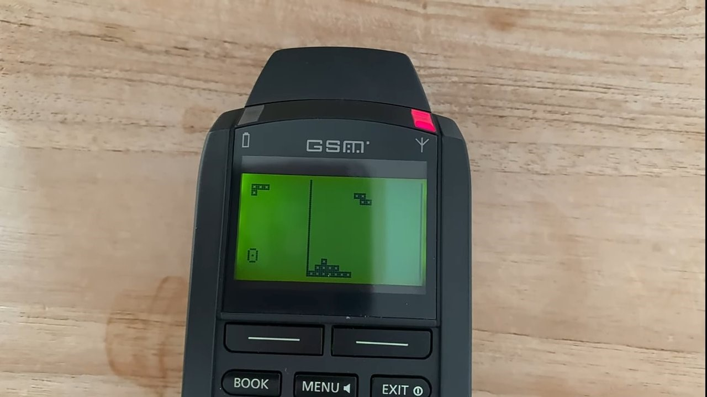
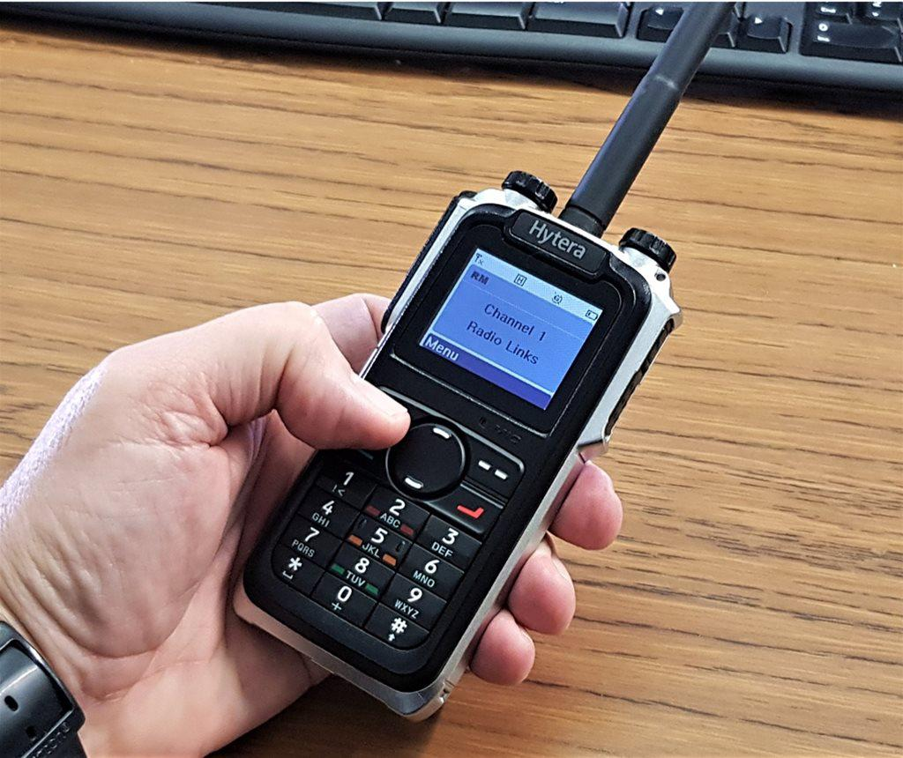

Evolution of phones
1874: Alexander Graham Bell discovers the principle of the telephone. He experiments with Thomas Watson to create the first telephone connection.
.jpg)
1877: The first permanent outdoor telephone wire is strung. Commercial telephone service began in the United States.
1894: Oliver Lodge demonstrates wireless communication over a distance of 150 yards. This was the beginning of cell phone technology as we know it.
1915: Bell System completes a U.S. transcontinental telephone line. At this point, everyone in the US was connected to each other.
1946: The first commercial mobile telephone service is put into service, linking moving vehicles or objects to the telephone network by radio.
1953: The laying of transatlantic telephone cables begins. Calls were able to be made to European countries, then eventually the rest of the world.
1960: Videophones become more affordable and practical.

1963: Bell Systems introduces the touch tone phone. This telephone made a different beep for each number instead of counted clicks for each number, and replaced rotary phones.
1971: Intel Corporation develops the first single chip microprocessor, the 4004. The microprocessor would make telephones and switching systems smaller, lighter and faster to use.
1972: Motorola demonstrates the cellular telephone to the FCC. People could call each other without wires, and the cell phone was born.
1983: Martin Cooper is credited with developing the first cell phone approved for commercial use.
1992: First SMS (Short Message Service) - also known as a text - is sent.
1994: First mobile game appears on the Hagenuk MT-2000 - a version of the ever popular Tetris.

1997: Nokia introduces the popular Snake game.
1999/2000: BlackBerry phones appear for the first time. Popular for their messaging service and phones have a back facing camera, used for taking family photos.
2001: The 3G (third generation) phone network launches.
2003: Phones with a front-facing camera become popular, enabling us to take a selfie. They first appeared in Japan in 1999.
2007: The first Apple iPhone is launched.
2008: The first Android smartphone is launched.
2013: Acer's Liquid S2 is the first phone to include a 4K camera for high-definition images.
2015: The first iPhone to record 4K video appears.
Types of phone
Early Telephones (1870s – 1930s): Rotary Dial Phones – Circular dial for calling
Mid-Century Landline Phones (1930s – 1970s): Touch-Tone Phones – Used buttons instead of rotary dials.
Car Phones & Mobile Radio Phones (1940s – 1980s): Mobile Radio Telephones (1946) – Used by police, taxis.

First Generation Mobile Phones (1G) – Analog (1980s): Motorola DynaTAC 8000X (1983) – First commercial mobile phone.
Second Generation (2G) – Digital (1991 – 2000s): Popular 2G Phones such as Nokia 3210
Third Generation (3G) – Multimedia (2001 – 2010s) Popular 3G Phones such as BlackBerry (QWERTY keyboard phones)
Usage of phones
1870s–1940s: Voice calls via landline with the invention of early phones.
1950s–70s: Widespread home use with the introduction of touch tone dialing.
1980s–90s: Mobile voice and SMS are accessible with the invention of cell networks and portable devices
2000s: phones now have text functions, games and basic apps with it being now globally accessible
2010s-now phones is now a all in one smart device, with modern technologies such as cloud, AI and 5G connection.
Minigame!
Click on the Early Telephones and avoid the rest